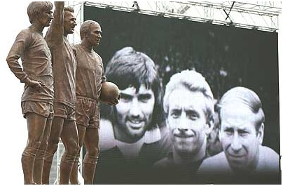
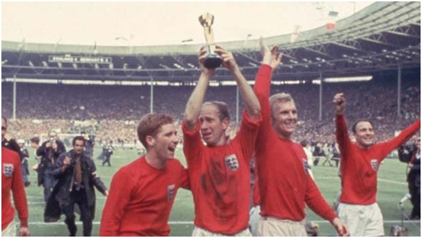

Chương 15

ể chuẩn bị cho World Cup 1966, BLĐ Manchester United lên kế hoạch đại tu khán đài phía Bắc sân Old Trafford. Khán đài này vốn được lắp đặt mái bằng, với những hàng cột chống đỡ bên dưới. Do những hàng cột gây trở ngại cho tầm nhìn người hâm mộ, CLB cho thay hệ thống mái che cũ bằng những tấm mái chìa tối tân, không cần đến cột trụ. Thêm vào đó, đội còn xây 34 lô ghế riêng biệt giành cho khán giả thượng lưu. Đây là các lô ghế bài trí vô cùng sang trọng,có cả quầy bar và thang máy riêng, giá vé mùa cho một lô dao động từ 250 đến 300 bảng. Đắt như thế nhưng vừa bán ra, giới nhà giàu đã mua hết veo. Sửa sang xong, Old Trafford nhìn hoành tráng hơn hẳn. Chẳng thế mà Bobby Charlton lại đặt cho sân cái tên mỹ miều Mộng Hý Trường (Nhà Hát Những Giấc Mơ).
Với phí tổn đại tu sân lên đến 320000 bảng, United không còn tiền cho ngân sách chuyển nhượng. Nhưng Matt Busby không bận tâm, ông tự tin đội hình hiện tại thừa sức mạnh cạnh tranh ngôi vô địch, bởi từ 1964, George Best bắt đầu đá chính trên đội một, hợp cùng Bobby Charlton và Denis Law tạo thành bộ ba huyền thoại. Báo giới Anh gọi bộ ba này là Holy Trinity, có thể dịch thoát sang Việt ngữ là Tam Bất Tử, hay Tam Thánh.

M.U. Tam Thánh: Best, Law, Charlton. Năm 2008, Manchester United cho đúc tượng đồng bộ ba bất tử, dựng trước Old Trafford (Ảnh: Strettynews.com)
M.U. Tam Thánh mỗi người mỗi vẻ, bổ sung, nâng cánh cho nhau. Cả ba đều rất cá tính, nên không mấy hòa hợp bên ngoài sân cỏ, song trên sân, họ như ba chân của một chiếc kiềng, giúp United thăng hoa, vững vàng trước mọi chướng ngại. Bobby Charlton là một Paul Scholes của thập kỷ 1960: đĩnh đạc, đường bệ, chơi tốt cả hai vị trí tiền vệ và tiền đạo, sở trường những cú sút xa chết người, mạnh như trái phá. Denis Law phong trần, ngạo nghễ, mang bản năng sư tử săn mồi. Ông là sát thủ trong vòng cấm, có thể khi bàn từ mọi tình huống. George Best thì điển trai, hào hoa, kỹ thuật cá nhân vô song, đôi chân dẻo quẹo lừa bóng đầy ma thuật bên đường biên. Trong ba người, Best trẻ nhất, nhưng được dự đoán sẽ tiến xa hơn hai đàn anh. Giới chuyên môn thời ấy đều thống nhất quan điểm: Nếu có ai soán được ngôi vua bóng đá từ Pele, người đó chỉ có thể là George Best hoặc “hắc báo” Eusebio của Bồ Đào Nha.
Sở hữu những cầu thủ siêu hạng, United cống hiến cho khán giả bao trận cầu cuốn hút, làm say đắm lòng người. Lúc này, đài BBC bắt đầu tường thuật bóng đá trên truyền hình, nên không chỉ CĐV đến sân, mà toàn thể nước Anh đều ngất ngây cùng Quỷ Đỏ. Chúng ta hãy nghe nhà báo Brian Glanville tường thuật một trận đấu của đội:
“Trên sân Old Trafford hôm nay, Manchester United thắp sáng một buổi chiều ẩm thấp, ảm đạm, với một màn trình diễn bậc thầy, đầy mỹ cảm. Mỗi lần họ tổ chức tấn công, đó là một tác phẩm nghệ thuật. Tiền đạo tiến rồi lại thoái, vào rồi lại ra, nhịp nhàng như những con thoi, dệt nên tấm thảm màu nhung đỏ khổng lồ. Vị trí chỉ là tương đối: Tả biên vút cái đã sang phải, hữu biên vèo cái biến sang trái. Charlton vừa lùi sâu phân phối bóng, đã vọt lên tấn công. Law áo bỏ ngoài quần, tóc phất phơ trong gió, thoắt ẩn thoắt hiện, xuất quỷ nhập thần, khiến đối phương không biết đâu mà lần…”
Mùa 1964-1965, United nóng máy chậm, đá sáu trận đầu chỉ thắng được một. Từ vòng bảy trở đi, đội mới thể hiện phong độ hủy diệt, đỉnh cao là trận thắng Aston Villa 7-0 (Law ghi bốn bàn). Đang ngon trớn đến tháng 12, bỗng Denis Law lĩnh án treo giò 28 ngày vì tội chửi trọng tài[1]. Mùa trước, trong thời gian Law bị treo giò, United thua 3/4 trận, vì đó mất chức vô địch về tay Liverpool. Lần này khá hơn, ba trận vắng Law, đội thắng một hòa hai. Tuy vậy, United vẫn bị Leeds bám cực sát trên bảng xếp hạng.
Bước sang năm 1965, cuộc đua United-Leeds diễn ra ngày càng quyết liệt trên cả hai mặt trận: giải VĐQG và Cúp FA. Bán Kết Cúp FA giữa hai đội vào ngày 27 tháng 3 không có bàn thắng nào, nhưng đầy bạo lực. Cầu thủ song phương lao vào đập nhau: Denis Law đánh tay đôi với Jack Charlton, còn Pat Crerand vật lộn cùng Billy Bremner. Một hooligan United còn nhảy cả xuống sân rượt trọng tài. Trong trận tái đấu, Leeds thắng 1-0, giành quyền vào chung kết.
Tuy thắng trận cầu, Leeds thua cuộc chiến. Họ bị Liverpool “nẫng” mất Cúp FA, và bị United phục thù bằng đúng tỷ số 1-0 trong trận chung kết sớm giải VĐQG vào tháng tư. Kết thúc mùa Hạng Nhất, United và Leeds cùng được 61 điểm, United vô địch nhờ hơn về số bàn thắng trung bình. Tính tất cả các giải, Quỷ Đỏ mùa này ghi được 128 bàn, quá nửa trong số đó do công Tam Thánh. Denis Law tiếp tục dẫn đầu với 39 lần phá lưới, Charlton và Best tuy chơi lệch cánh cũng đóng góp mỗi người 18 và 14 bàn.
Là nhà vô địch Anh, United có cơ hội tái xuất Cúp C1. Dễ dàng vượt qua HJK Helsinki và Vorwarts Berlin trong các vòng đầu, đội đụng phải đối thủ cứng cựa Benfica ở tứ kết. Tuy thắng 3-2 trận lượt đi, việc để lọt lưới hai bàn trên sân nhà khiến không ít fan lo lắng cho chuyến đến làm khách tại Lisbon. Không lo lắng sao được, khi Benfica có trong tay Eusebio, người mỗi mùa ghi trung bình…37 bàn thắng!
Thế mà nỗi lo hóa ra thừa thãi, bởi trong trận lượt về ngày 9 tháng 3, 1966, Eusebio hoàn toàn bị George Best phủ bóng. Mới phút thứ 6, Best đã đánh đầu mở tỷ số cho đội khách. Phút 12, lại là Best nhận bóng từ giữa sân, tăng tốc xé gió, lướt qua ba hậu vệ đối phương, nhân đôi cách biệt. Bốn phút sau, Best chuyền cho John Connelly ghi bàn thứ ba;trận đấu coi như kết thúc. Best tiếp tục tra tấn hàng thủ Benfica, bỏ lỡ mấy cơ hội lập hattrick, trước khi Crerand và Charlton bồi thêm hai bàn trong hiệp hai. Đến bàn thắng danh dự của Benfica cũng do Shay Brennan ghi hộ bằng cách đá phản lưới nhà!
Thua tâm phục khẩu phục, tờ La Bola của Bồ Đào Nha thừa nhận: “Chúng ta thua vì Manchester United quá phi thường. Không nghi ngờ gì nữa, đội bóng của Matt Busby chính là CLB vĩ đại nhất châu Âu kể từ thời Real Madrid hùng mạnh”. Báo này cũng hết lời tán dương George Best. Từ một ngôi sao Anh Quốc, sau trận thắng Benfica, Best vươn lên thành siêu sao toàn cầu, được ngưỡng mộ khắp bốn phương. Nước Anh bấy giờ có năm người lừng danh nhất thế giới, bốn là thành viên ban nhạc Beatles, người thứ năm chính là Best.
Kỳ vọng vào Best quá lớn, nên bất chấp việc anh chấn thương, Matt Busby vẫn điền tên thần đồng người Bắc Ireland vào danh sách đến Nam Tư chơi trận bán kết lượt đi trước Partizan Belgrade. Ra sân trong tình trạng thể lực không bảo đảm, Best chủ yếu đi bộ trên sân, United coi như đá chấp người, ôm đầu thúc thủ 2-0. Lượt về trên sân Old Trafford, CLB thắng lại một bàn, nhờ công Nobby Stiles, nhưng không đủ để đi tiếp. Bị loại bởi đối thủ dưới cơ, toàn đội đều sa sút tinh thần. “Thật là một mối hận”, Denis Law tiếc nuối, “Lẽ ra chúng tôi phải vô địch năm đó. Lẽ ra CLB Đại Anh đầu tiên giành Cúp C1 phải là Manchester United, không phải Celtic.”
Tại giải VĐQG, tình hình không khá hơn. Khó khăn ập đến khi Denis Law chấn thương, phải rời sân trong trận gặp Tottenham vào tháng 10, 1965[2]. Chấn thương hành hạ khiến Law cả mùa chỉ ghi được 24 bàn, ít hơn David Herd (33). Cuối mùa, sau trận thua Partizan, đến lượt George Best phải vào viện phẫu thuật, nghỉ luôn đến hết giải. Bên cạnh đó, United còn gặp vấn đề nơi hàng thủ: Thủ thành Harry Gregg đã xuống phong độ, không còn vững vàng như xưa, hai thủ môn còn lại là David Gaskell và Pat Dunne cũng phập phù, trận được trận mất. Kết cuộc, đội đánh mất ngôi vương, rớt xuống vị trí thứtư.
Mùa bóng hết, song rắc rối chưa hết. Sau chuyến nghỉ hè trở về, Matt Busby nhận được trong thùng thư thông điệp ký tên Denis Law. Trong thư, Law đưa ra yêu sách: Nếu không được ký hợp đồng mới với mức lương hậu hĩnh, kèm theo phí lót tay, anh sẽ rời Old Trafford. À, anh chàng này nghĩ mình lớn hơn CLB rồi đây. Muốn gì thì phải đích thân tới gặp, hoặc ít nhất là gọi điện thoại, chứ gửi thư thế này là sao? Busby tự nhủ, rồi lập tức điền tên Law vào danh sách rao bán.
Vừa mới rao, hàng loạt đội bóng đã nhảy vào xin mua, không chỉ CLB Anh, mà các ông lớn Ý như AC Milan, Inter, Juventus cũng sẵn sàng bỏ ra 150000 bảng để có Law. Bản thân Law thì phát hoảng, vì anh chỉ dọa, chứ đâu có ý định bỏ United. Thấy không “nắn xương” được Busby, anh gọi cho ông thầy, hẹn gặp để bàn bạc giải quyết vấn đề. Trong buổi gặp, Busby đặt ra điều kiện: Phí lót tay chắc chắn không thể trả, nhưng nếu Law chịu xin lỗi công khai, ông sẽ tăng lương cho anh theo như yêu cầu. Có điều, Law phải giữ kín các điều khoản về lương bổng, không được tiết lộ cho ai, tránh việc các cầu thủ khác hùa theo đòi thêm tiền. Law gật đầu đồng ý ngay.
Giữa lúc Law đòi tăng lương, ba cầu thủ khác của United, Bobby Charlton, Nobby Stiles và John Connelly, cùng ĐTQG Anh tranh tài tại World Cup 1966. Stiles kèm chết vua phá lưới Eusebio trong trận bán kết, góp công lớn đưa Anh thắng sít sao 2-1 trước Bồ Đào Nha. Charlton thì không phải nói; anh đóng vai linh hồn, truyền cảm hứng cho Tam Sư giành chức vô địch thế giới. Danh hiệu World Cup là nhân tố chính giúp Charlton ẵm cùng lúc hai phần thưởng của năm 1966: Cầu Thủ Xuất Sắc Nhất Nước Anh (FWA) và Quả Bóng Vàng Châu Âu.

Bobby Charlton giương cao cúp Nữ Thần Vàng (Ảnh: Thefa.com)
Chú thích:
[1] Theo lời Law, anh mắng đồng đội Pat Crerand, nhưng trọng tài nghe nhầm, tưởng là mắng mình.
[2] Mùa đó, lần đần tiên các CLB được phép thay đổi người. Denis Law chính là cầu thủ United đầu tiên bị thay giữa chừng, còn người đầu tiên vào sân từ ghế dự bị là John Fitzpatrick.